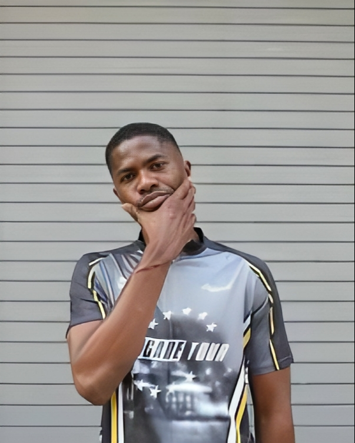
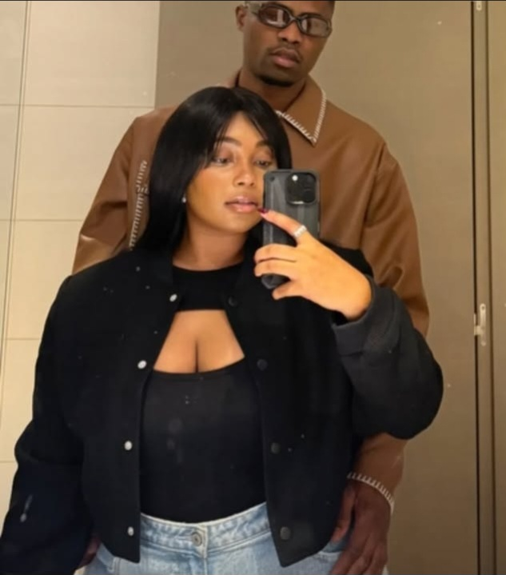
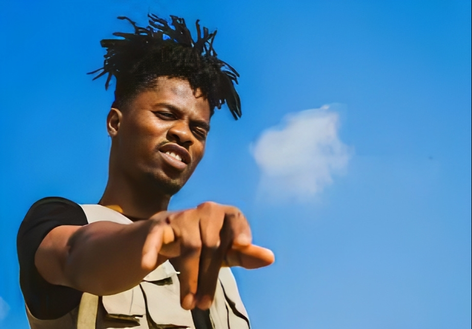

KWESI ARTHUR IS BACK: THE KING OF GHANA'S RAP SCENE RETURNS WITH A VENGEANCE!
The highly anticipated return of Ghana's sensational and versatile artist, Kwesi Arthur, has finally arrived, and it's making waves in the music industry. After a long hiatus spent honing his craft in Europe and quality time with his loved ones, Kwesi Arthur is back to unleash his lyrical prowess on the Ghanaian music scene.
The news of his return has sent shockwaves of excitement throughout the country, with fans and music enthusiasts eagerly awaiting his next move. And, boy, did he deliver! Kwesi Arthur has announced a tour, with his first performance taking place at the University of Development Studies.
This is not just any ordinary performance; it's a testament to Kwesi Arthur's dedication to his craft and his fans. The University of Development Studies, known for nurturing young talent, provides the perfect platform for Kwesi Arthur to connect with his audience and showcase his artistry.
Kwesi Arthur's music has always been a reflection of his life experiences, and his time in Europe has undoubtedly influenced his sound. Fans can expect a fresh perspective, new energy, and unapologetic honesty in his lyrics. With his unique blend of Afrobeats, hip-hop, and highlife, Kwesi Arthur is set to take the Ghanaian music scene by storm once again.
The excitement surrounding Kwesi Arthur's return is palpable. Fans are going wild on social media, expressing their eagerness to see him perform live. The University of Development Studies, as expected, was packed to capacity, with students and music lovers alike clamouring to get a glimpse of the king of Ghana's rap scene.
As Kwesi Arthur takes the stage, one thing is certain – he's not just back, he's back with a vengeance! Get ready for a night of non-stop entertainment, thought-provoking lyrics, and unbridled energy. It's going to be a wild ride, and you won't want to miss it!
Author: M.F.B.
Editor: Legon KWESIARTHUR